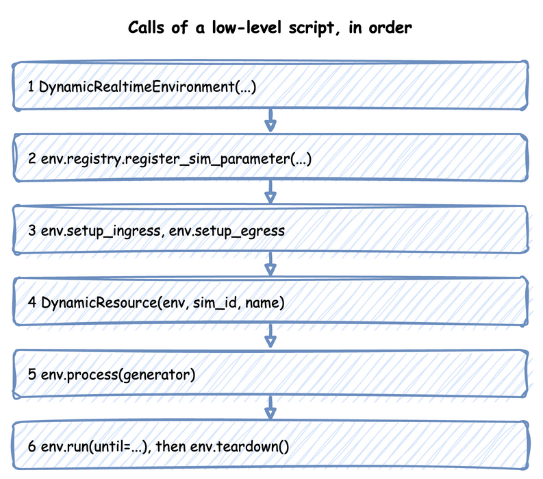

Low-level API
This page writes a simulation with SimPy and the environment directly: a packing team with a stock of boxes and a store of packed orders, every step written by hand. It builds on SimPy and desflow, which describes the SimPy constructs, and on Builder API, which writes the same kind of model for you.
What It Is
Use the low-level API when you need what the builder does not do: events and interactions of your own shape, such as a resource created while the run goes on in Add Resources Mid-run. A builder or blueprint model can also start a low-level process with add_process, as Tasks and Processes shows.
A low-level script takes these steps, in this order:

How to Use It
Create the Environment
| docs/snippets/pages/low_level.py:imports |
|---|
| import logging
from desflow import (
CapacityConfig,
ConsoleEgress,
ContainerConfig,
DistributionConfig,
DynamicContainer,
DynamicRealtimeEnvironment,
DynamicResource,
DynamicStore,
Sampler,
SimParameter,
time_to_seconds,
)
|
| docs/snippets/pages/low_level.py:environment |
|---|
| env = DynamicRealtimeEnvironment(factor=0.0) # unpaced; 1.0 follows the wall clock
|
factor sets the pacing: 1.0 follows the wall clock, and 0.0 runs as fast as possible. logical_start_time and go_live_at work as Time and Pacing describes.
Register the Parameters
| docs/snippets/pages/low_level.py:parameters |
|---|
| env.registry.register_sim_parameter(
SimParameter(
sim_id="Shop",
# An order every 2 s on average (rate 0.5)
arrival={"orders": DistributionConfig(dist="exponential", rate=0.5)},
service={"packing": DistributionConfig(dist="normal", mean=1.5, std=0.3)},
resources={"packers": CapacityConfig(current_cap=1, max_cap=3)},
containers={"boxes": ContainerConfig(current_cap=100, max_cap=100, level=100)},
stores={"finished": CapacityConfig(current_cap=50, max_cap=50)},
variables={"boxes_per_order": 1.0},
)
)
|
One SimParameter holds every parameter of one simulation under its sim_id. Registering it gives each value a path, such as Shop.arrival.orders.rate, and only the registered paths exist. Live Parameters lists the paths.
Attach the Connectors
| docs/snippets/pages/low_level.py:connectors |
|---|
| env.setup_egress([ConsoleEgress()]) # starts the egress thread
# env.setup_ingress([KafkaIngress(...)]) would start the ingress thread
env.setup_stats("Shop", "basic", interval=60) # readings and counts every minute
|
setup_egress starts the egress thread, which writes every record the processes publish. setup_ingress starts the ingress thread for parameter changes from outside, and setup_stats switches on the built-in statistics. Egress lists the arguments of setup_egress, including a warm-up and labels sinks.
Create Resources, Containers and Stores
| docs/snippets/pages/low_level.py:resources |
|---|
| packers = DynamicResource(env, "Shop", "packers") # reads Shop.resources.packers.*
boxes = DynamicContainer(env, "Shop", "boxes") # starts at its level, 100
finished = DynamicStore(env, "Shop", "finished")
sampler = Sampler(seed=42) # a random stream per distribution, from one seed
|
Each one reads its capacity from the registry when it is created, so the parameters must be registered first. Each one also adds itself to the statistics. Sampler(seed=42) gives each registered distribution a random stream of its own, so a run repeats exactly, as Arrivals and Services describes.
Write the Processes
A process is a SimPy generator: it yields to wait, and publishes records as it goes. This one does what @app.task does in the builder, with a box from stock and a store for the result. It publishes each event with the entity key, the task's name and its instance id, and reports each step to the statistics:
| docs/snippets/pages/low_level.py:order |
|---|
| def order(env, key, task_id):
"""One order: queue for a packer, take a box, pack, then store the result."""
path_id = "Shop.service.packing"
def publish(value):
env.publish_event(key, value, task="pack_order", instance=task_id)
publish({"path_id": path_id, "status": "queued"})
env.stats.task_queued("pack_order", task_id) # what @app.task reports for you
with packers.request() as request:
yield request
count = env.registry.get("Shop.variables.boxes_per_order").value
yield boxes.get(count) # waits if the stock is too low
publish({"path_id": path_id, "status": "started"})
env.stats.task_started("pack_order", task_id)
yield env.timeout(sampler.sample(env.registry.get_config(path_id)))
yield finished.put({"order": key})
publish({"event_type": "order_packed"})
env.stats.task_finished("pack_order", task_id)
env.stats.flow_finished("orders")
|
The service time is drawn once the order has a packer and a box, from the configuration the registry holds at that moment, so a change made while it waited still applies to it.
The arrival loop keeps the configuration object rather than a copy of the rate. The registry changes that object in place when a new rate arrives, so the next draw uses the current rate. It gives each order its key, orders-1, orders-2:
| docs/snippets/pages/low_level.py:arrivals |
|---|
| def arrivals(env):
gap = env.registry.get_config("Shop.arrival.orders") # the live config object
task_id = 0
while True:
yield env.timeout(sampler.sample(gap)) # each draw reads the current rate
env.process(order(env, f"orders-{task_id + 1}", task_id)) # the entity key
task_id += 1
|
A reading of your own is a process that publishes at an interval. publish_telemetry uses the name exactly as given:
| docs/snippets/pages/low_level.py:telemetry |
|---|
| def telemetry(env):
"""A reading of your own, beside the built-in statistics."""
while True:
env.publish_telemetry("Shop.boxes_per_packer", boxes.level / packers.capacity)
yield env.timeout(10.0)
|
A process can also change the simulation itself, through the registry, as a connector or a scenario would:
| docs/snippets/pages/low_level.py:control |
|---|
| def refill_and_rush(env):
"""Refills boxes every minute, and doubles arrivals after five minutes."""
while True:
yield env.timeout(60.0)
missing = boxes.capacity - boxes.level
if missing > 0: # SimPy refuses a put of 0
yield boxes.put(missing)
if env.now >= 300 and env.registry.get("Shop.arrival.orders.rate").value < 1.0:
env.registry.update("Shop.arrival.orders.rate", 1.0)
env.registry.update("Shop.resources.packers.current_cap", 2)
|
Start the Processes and Run
| docs/snippets/pages/low_level.py:start |
|---|
| env.process(arrivals(env))
env.process(telemetry(env))
env.process(refill_and_rush(env))
|
| docs/snippets/pages/low_level.py:run |
|---|
| logging.basicConfig(
level=logging.INFO, format="%(levelname)s [%(asctime)s] %(message)s"
)
try:
env.run(until=time_to_seconds("10 min")) # until is in simulation seconds
finally:
env.teardown() # flushes the buffers and stops the threads
|
ConsoleEgress writes each record as a log line at INFO level, so logging is switched on first. env.run is SimPy's, so until is a number of simulation seconds. time_to_seconds converts a duration such as "10 min". teardown in finally publishes the last statistics, flushes the last records and stops both threads, even when the run stops with Ctrl+C or an error.
A script can run the model in segments by calling env.run(until=...) again, as in SimPy. env.schedule(event, priority, delay) is SimPy's own: simpy.events.URGENT puts an event before the NORMAL ones at its time. Run Length covers segments, strict, sync() and env.resume_pacing().
An environment subclass is plain Python: class Traced(DynamicRealtimeEnvironment), whose __init__ takes **kwargs and passes them on, and whose step or schedule calls super(). Inside run(), step runs once per event, desflow's own events included.
How It Works
The environment does little for you. It paces the clock, holds the registry, writes records on the egress thread and keeps the statistics that setup_stats switches on. Everything else is your code. Builder API lists what SimulationContext.run() writes for you on top of the same steps.
The environment runs on three threads: the SimPy thread runs your processes, the ingress thread runs the sources and the egress thread runs the sinks. Alongside your processes, the environment starts processes of its own on the SimPy thread:
- The ingress monitor applies the sources' changes to the registry every 0.1 simulation seconds.
- Each sink has a process that flushes its buffer on the sink's interval.
- The lag monitor measures how far the clock is behind the wall clock once the run is live.
- The statistics timer publishes the statistics every interval.
- One process ends the warm-up.
env.step() and env.peek() do not count these processes. Time and Pacing shows the threads and the switch to real time.
Stability and Limits
Nothing is checked before the run as a whole. Each call checks only what it reads, when it runs:
- An unregistered path raises
KeyError when a resource, a process or a registry.get asks for it, so register the parameters before creating anything that reads them.
- A record without egress is dropped. Until
setup_egress runs, publish_event and publish_telemetry do nothing, without an error.
- A
Sampler() with no seed draws nothing at random, as Arrivals and Services explains, so give it a seed.
- A paced run is strict by default. Strict Pacing gives what it does and its default in each API.
- An unhandled failure stops the run under
stop. DynamicRealtimeEnvironment(on_unhandled_failure=...) is stop by default, as a plain SimPy environment is. Under stop, a one-shot Signal failure that nobody waits for raises SignalFailed, and the run stops. Pass "continue" to defuse such a failure and let the run go on. A re-arming signal's failure is always defused. An exception raised in a process stops the run under both settings. The keyword must be stop or continue.
Beyond those, a process can do anything SimPy can model.
Example
Full script
The complete file, which the documentation tests run:
| docs/snippets/pages/low_level.py |
|---|
| """A complete low-level simulation, as the Low-level API page explains it step by step.
One packing team with a stock of boxes and a store of packed orders. Run it with
`python low_level.py`: it runs unpaced for 10 simulation minutes and prints every record
to the terminal.
"""
import logging
from desflow import (
CapacityConfig,
ConsoleEgress,
ContainerConfig,
DistributionConfig,
DynamicContainer,
DynamicRealtimeEnvironment,
DynamicResource,
DynamicStore,
Sampler,
SimParameter,
time_to_seconds,
)
env = DynamicRealtimeEnvironment(factor=0.0) # unpaced; 1.0 follows the wall clock
env.registry.register_sim_parameter(
SimParameter(
sim_id="Shop",
# An order every 2 s on average (rate 0.5)
arrival={"orders": DistributionConfig(dist="exponential", rate=0.5)},
service={"packing": DistributionConfig(dist="normal", mean=1.5, std=0.3)},
resources={"packers": CapacityConfig(current_cap=1, max_cap=3)},
containers={"boxes": ContainerConfig(current_cap=100, max_cap=100, level=100)},
stores={"finished": CapacityConfig(current_cap=50, max_cap=50)},
variables={"boxes_per_order": 1.0},
)
)
env.setup_egress([ConsoleEgress()]) # starts the egress thread
# env.setup_ingress([KafkaIngress(...)]) would start the ingress thread
env.setup_stats("Shop", "basic", interval=60) # readings and counts every minute
packers = DynamicResource(env, "Shop", "packers") # reads Shop.resources.packers.*
boxes = DynamicContainer(env, "Shop", "boxes") # starts at its level, 100
finished = DynamicStore(env, "Shop", "finished")
sampler = Sampler(seed=42) # a random stream per distribution, from one seed
def order(env, key, task_id):
"""One order: queue for a packer, take a box, pack, then store the result."""
path_id = "Shop.service.packing"
def publish(value):
env.publish_event(key, value, task="pack_order", instance=task_id)
publish({"path_id": path_id, "status": "queued"})
env.stats.task_queued("pack_order", task_id) # what @app.task reports for you
with packers.request() as request:
yield request
count = env.registry.get("Shop.variables.boxes_per_order").value
yield boxes.get(count) # waits if the stock is too low
publish({"path_id": path_id, "status": "started"})
env.stats.task_started("pack_order", task_id)
yield env.timeout(sampler.sample(env.registry.get_config(path_id)))
yield finished.put({"order": key})
publish({"event_type": "order_packed"})
env.stats.task_finished("pack_order", task_id)
env.stats.flow_finished("orders")
def arrivals(env):
gap = env.registry.get_config("Shop.arrival.orders") # the live config object
task_id = 0
while True:
yield env.timeout(sampler.sample(gap)) # each draw reads the current rate
env.process(order(env, f"orders-{task_id + 1}", task_id)) # the entity key
task_id += 1
def telemetry(env):
"""A reading of your own, beside the built-in statistics."""
while True:
env.publish_telemetry("Shop.boxes_per_packer", boxes.level / packers.capacity)
yield env.timeout(10.0)
def refill_and_rush(env):
"""Refills boxes every minute, and doubles arrivals after five minutes."""
while True:
yield env.timeout(60.0)
missing = boxes.capacity - boxes.level
if missing > 0: # SimPy refuses a put of 0
yield boxes.put(missing)
if env.now >= 300 and env.registry.get("Shop.arrival.orders.rate").value < 1.0:
env.registry.update("Shop.arrival.orders.rate", 1.0)
env.registry.update("Shop.resources.packers.current_cap", 2)
env.process(arrivals(env))
env.process(telemetry(env))
env.process(refill_and_rush(env))
if __name__ == "__main__":
logging.basicConfig(
level=logging.INFO, format="%(levelname)s [%(asctime)s] %(message)s"
)
try:
env.run(until=time_to_seconds("10 min")) # until is in simulation seconds
finally:
env.teardown() # flushes the buffers and stops the threads
assert (
packers.capacity == 2
and env.registry.get("Shop.arrival.orders.rate").value == 1.0
)
assert len(finished.items) > 0
|